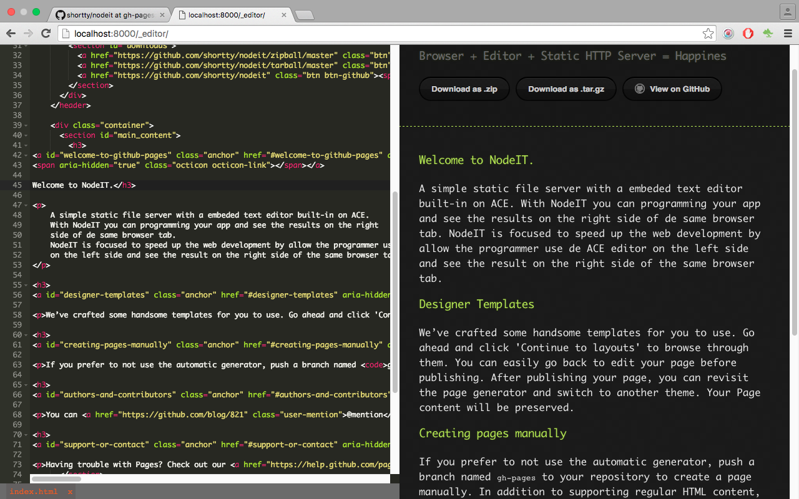
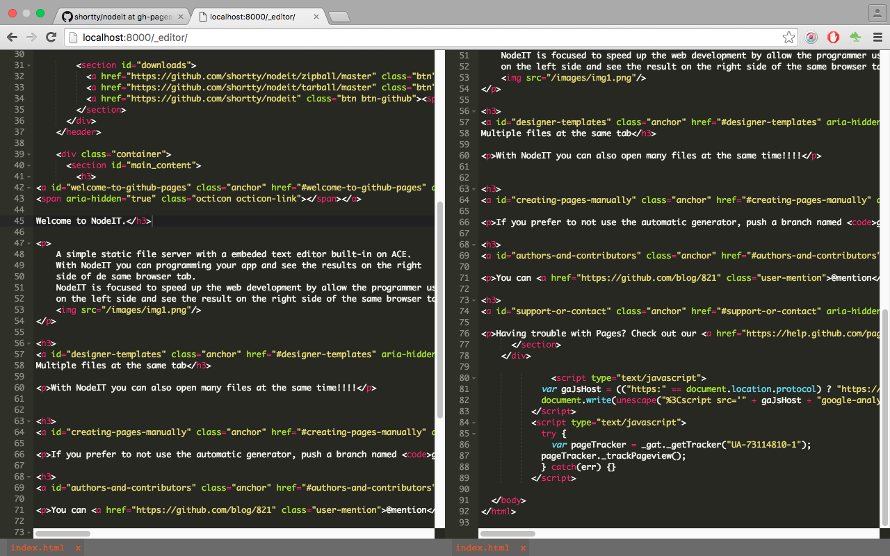
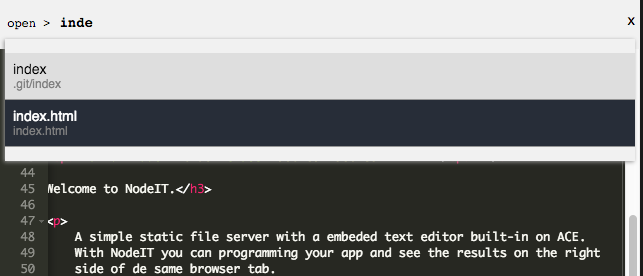
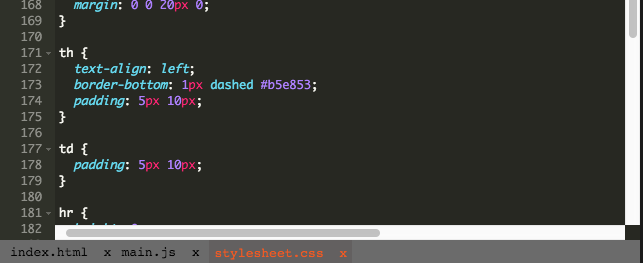
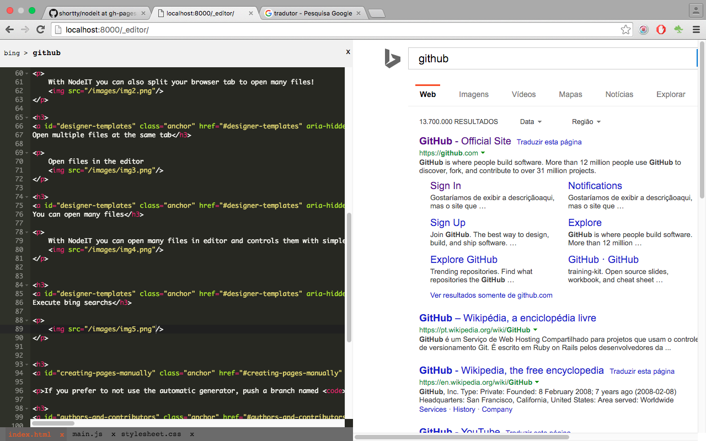
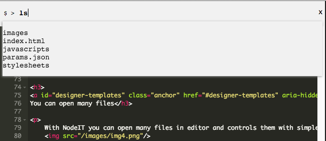

Welcome to NodeIT.
Nodeit is a simple static file server with a embedded text editor based on ACE. NodeIT is focused to speed up the web development allowing the programmer to use de ACE editor on the left side and see the result on the right side of the same browser tab.
Many files simultaneously
With NodeIT you can also split your browser tab to open many files!
Open multiple files
Open files in the editor with incremental search.
Browse between opened files
With NodeIT you can open many files in editor and controls them with simples hotkeys.
Execute Bing search
You can search at the Bing website just putting your terms in the action box and the nodeit will open a Bing response on the right side of the tab.
Execute shell commands
You can execute shell commands by input your command in the action box and see the stdio from process
Dependencies
Installing
Download or clone the code of nodeit and then execute the follow steps:
- $ cd NODEIT_PATH_DOWNLOAD
- $ npm install
- $ npm link
Using
After installation
- $ cd PathThatYouWantToServeFiles
- $ nodeit
- Open the browser at http://localhost:8000/_editor
Manual and Hotkeys
Serve static files
$ nodeit port=8000
After start all the files in directory can be
accessed in the browser
For example, if you have a file index.html at the root you
can access http://localhost:8000/index.html
Open NodeIT Editor
$ nodeit
Open browser at http://localhost:8000/_editor
| Hotkey | Platform | Action |
|---|---|---|
| Command+Shift-O | Mac | Open File |
| Ctrl+Shift-O | Win + Lnux | |
| Option-Left | Mac | Move to previous open file |
| Alt-Left | Win + Linux | |
| Option-Right | Mac | Move to next the opened file |
| Alt-Right | Win + Linux | |
| Command+Shift-B | Mac | Execute Bing search |
| Ctrl+Shift-B | Win + Linux | |
| Command+Shift-P | Mac | Set right side size in % |
| Ctrl+Shift-P | Win + Linux | |
| Command-L | Mac | Set right side URL |
| Ctrl-L | Win + Linux | |
| Command+Shift-L | Mac | Refresh right side |
| Ctrl+Shift-L | Win + Linux | |
| Command+Shift-S | Mac | Open file at right side |
| Ctrl+Shift-S | Win + Linux | |
| Command+Shift-Z | Mac | Execute shell command |
| Ctrl+Shift-Z | Win + Linux |
Authors and Contributors
Philippe Moneda (@pmoneda)
Support or Contact
For support and bug report you can report Issues